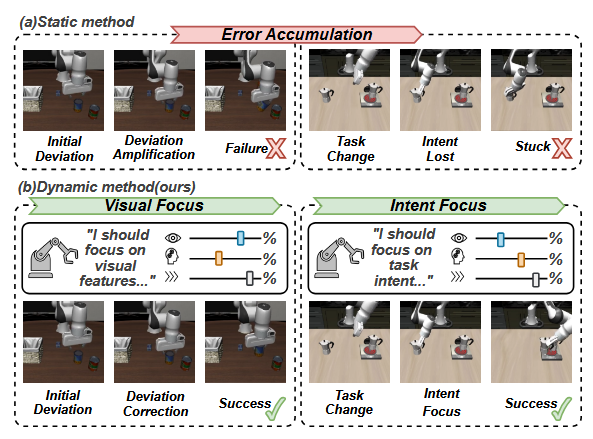
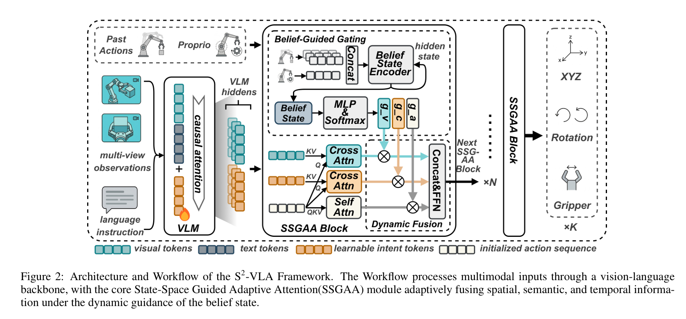
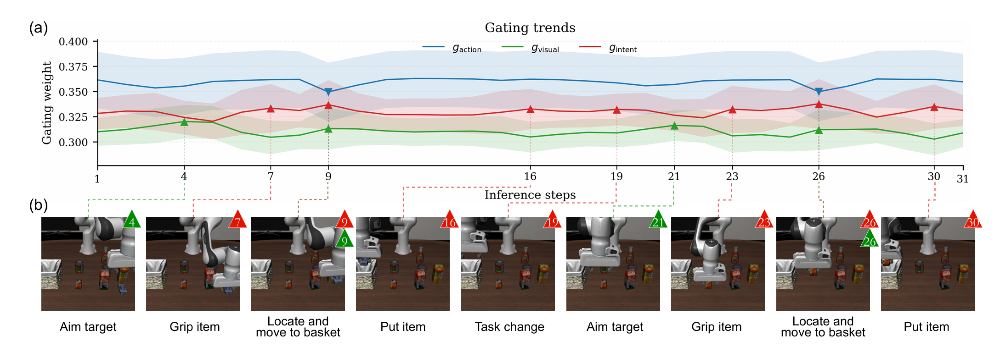

Abstract
Vision-Language-Action (VLA) models have demonstrated strong capabilities in robotic manipulation, but their performance degrades significantly in long-horizon tasks due to cumulative error propagation. This limitation largely arises from static feature fusion mechanisms that rely on fixed weights to combine visual, language, and action representations, preventing the model from adapting to different phases of task execution.
To address this limitation, we propose S²-VLA, a framework that introduces a State-Space Guided Adaptive Attention (SSGAA) mechanism. SSGAA maintains a belief state that tracks task progression and generates dynamic gating weights to adaptively fuse information from three complementary sources: visual features for spatial perception, task intents for high-level task planning, and temporal action sequences for execution consistency. Despite its compact 2B parameter size, S²-VLA consistently outperforms larger 7B-scale models and achieves state-of-the-art performance on long-horizon manipulation benchmarks.

Static vs. Dynamic Focus: Static fusion models easily get stuck due to error accumulation. S²-VLA dynamically toggles Visual and Intent Focus to correct deviations


Gating Weight Interpretability: During spatial tasks ("Aim target"), visual attention gating peaks ($g_{visual}$), while subtask execution switching triggers sharp intent peaks ($g_{intent}$).
Real-World Evaluations on ALOHA Platform
We evaluated S²-VLA on a real-world ALOHA dual-arm mobile manipulation platform operating at a 30 Hz control loop. The system was tested across four complex, long-horizon tasks under random position initializations. Thanks to the SSGAA mechanism, S²-VLA demonstrates superior real-world transfer capabilities and robustness against error accumulation.
1. Pick-and-place (Success Rate: 90%)
Procedure: Blue and yellow block positions are randomly initialized. The dual-arm system must accurately pick up the blue block and place it securely into a bowl.
2. Stacking (Success Rate: 80%)
Procedure: After random block position initialization, the model executes precise spatial alignment to stack the yellow block cleanly on top of the blue block.
3. Desktop Organization (Success Rate: 75%)
Procedure: A multi-step composite planning task where the system is required to first place the yellow block into a bowl, followed sequentially by placing the blue block into the same bowl.
4. Utensil Distribution (Success Rate: 60%)
Procedure: High-dexterity bimanual coordination task. The left arm picks up a pair of chopsticks, transfers them mid-air to the right arm, which then places them into a target bowl.
Real-World Success Rate Comparison
Compared to baseline imitation methods (ACT) and parallel tokenization models ($\pi_0$-FAST), S²-VLA achieves significantly higher success rates across all evaluated long-horizon routines:
| Task | ACT | $\pi_0$-FAST | S²-VLA (Ours) |
|---|---|---|---|
| Pick-and-place | 30% | 75% | 90% |
| Stacking | 20% | 55% | 80% |
| Desktop organization | 20% | 50% | 75% |
| Utensil distribution | 10% | 45% | 60% |
Simulation Benchmarks
We evaluated S²-VLA across two rigorous simulation ecosystems: LIBERO (for multi-stage lifelong task horizons) and SimplerEnv (evaluating real-to-sim policy alignment on a WidowX arm). S²-VLA sets a new state-of-the-art success baseline, demonstrating that adaptive state-guided attention scales execution fidelity more reliably than raw parameter scaling.
LIBERO Benchmark Comparison
Evaluated across the four standard task distributions (Spatial, Object, Goal, and Long-Horizon), S²-VLA consistently outperforms larger 7B and 8.5B scale static networks:
| Method | Scale (B) | Spatial (%) | Object (%) | Goal (%) | Long (%) | Avg. (%) |
|---|---|---|---|---|---|---|
| FlowVLA (2025, ArXiv) | 8.5 | 93.2 | 95.0 | 91.6 | 72.6 | 88.1 |
| UnifiedVLA (2025, ArXiv) | 8.5 | 95.4 | 98.8 | 93.6 | 94.0 | 95.5 |
| OpenVLA (2024, CoRL) | 7 | 84.7 | 88.4 | 79.2 | 53.7 | 76.5 |
| OpenVLA-OFT (2025, RSS) | 7 | 97.6 | 98.4 | 97.9 | 94.5 | 97.1 |
| UniVLA (2025, RSS) | 7 | 96.5 | 96.8 | 95.6 | 92.0 | 95.2 |
| MemoryVLA (2025, ArXiv) | 7 | 98.4 | 98.4 | 96.4 | 93.4 | 96.7 |
| CoT-VLA (2025, CVPR) | 7 | 87.5 | 91.6 | 87.6 | 69.0 | 81.1 |
| WorldVLA (2025, ArXiv) | 7 | 87.6 | 99.2 | 83.4 | 60.0 | 81.8 |
| CronusVLA (2025, AAAI) | 7 | 97.3 | 99.6 | 96.9 | 94.0 | 97.0 |
| TraceVLA (2025, ArXiv) | 7 | 84.6 | 85.2 | 75.1 | 54.1 | 74.8 |
| MolmoAct (2025, ArXiv) | 7 | 87.0 | 95.4 | 87.6 | 77.2 | 86.6 |
| ThinkAct (2025, NeurIPS) | 7 | 88.3 | 91.4 | 87.1 | 70.9 | 84.4 |
| 4D-VLA (2025, ArXiv) | 4 | 88.9 | 95.2 | 90.9 | 79.1 | 88.6 |
| SpatialVLA (2025, RSS) | 4 | 88.2 | 89.9 | 78.6 | 55.5 | 78.1 |
| $\pi_0$ (2025, RSS) | 3 | 96.8 | 98.8 | 95.8 | 85.2 | 94.2 |
| $\pi_0$-FAST (2025, RSS) | 3 | 96.4 | 96.8 | 88.6 | 60.2 | 85.5 |
| SmolVLA (2025, ArXiv) | 2.2 | 93.0 | 94.0 | 91.0 | 77.0 | 88.8 |
| GR00T N1 (2025, ArXiv) | 2 | 94.4 | 97.6 | 93.0 | 90.6 | 93.9 |
| Seer (2025, ArXiv) | 0.57 | - | - | - | 78.7 | 78.7 |
| VLA-OS (2025, ArXiv) | 0.5 | 87.0 | 96.5 | 92.7 | 66.0 | 85.6 |
| S²-VLA (ours) | 2 | 98.4 | 99.6 | 98.4 | 96.4 | 98.2 |
SimplerEnv-Bridge (WidowX Robot)
Evaluated under realistic simulation tracking, our model recovers missing geometric details better than alternative policy designs:
| Method | Spoon on Towel | Carrot on Plate | Stack Cube | Eggplant in Basket | Avg. Success |
|---|---|---|---|---|---|
| RT-1-X (2024, ICRA) | 0.0 | 4.2 | 0.0 | 0.0 | 1.1 |
| OpenVLA (2024, RSS) | 4.2 | 0.0 | 0.0 | 12.5 | 4.2 |
| Octo-Base (2024, ArXiv) | 15.8 | 12.5 | 0.0 | 41.7 | 17.5 |
| RoboVLMs (2024, ArXiv) | 45.8 | 20.8 | 4.2 | 79.2 | 37.5 |
| CogACT-Base (2024, ArXiv) | 71.7 | 50.8 | 15.0 | 67.5 | 51.3 |
| CogACT-Large (2024, ArXiv) | 58.3 | 45.8 | 29.2 | 95.8 | 57.3 |
| $\pi_0$-Uniform* (2024, ArXiv) | 63.3 | 58.8 | 21.3 | 79.2 | 55.7 |
| $\pi_0$-Beta* (2024, ArXiv) | 84.6 | 55.8 | 47.9 | 85.4 | 68.4 |
| Magma (2025, PP) | 37.5 | 29.2 | 20.8 | 91.7 | 44.8 |
| TraceVLA (2025, ArXiv) | 12.5 | 16.6 | 16.6 | 65.0 | 27.7 |
| SpatialVLA (2025, ArXiv) | 16.7 | 25.0 | 29.2 | 100.0 | 42.7 |
| MemoryVLA (2025, ArXiv) | 75.0 | 75.0 | 37.5 | 100.0 | 71.9 |
| S²-VLA (ours) | 83.3 | 87.5 | 41.7 | 100.0 | 78.1 |
BibTeX
@article{xie2026s2vla,
title={S²-VLA: State-Space Guided Vision-Language-Action Models for Long-Horizon Manipulation},
author={Zhipeng Xie, Zongyi Han, Xiangyi Wei, Shiliang Sun, Yang Li and Jing Zhao},
journal={arXiv preprint arXiv:2606.27872},
year={2026},
url={https://arxiv.org/abs/2606.27872}
}